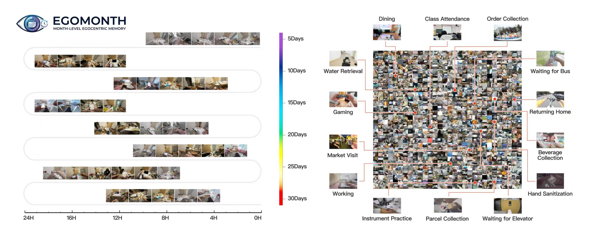
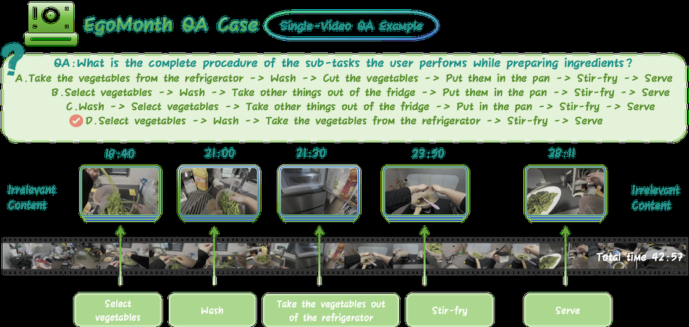
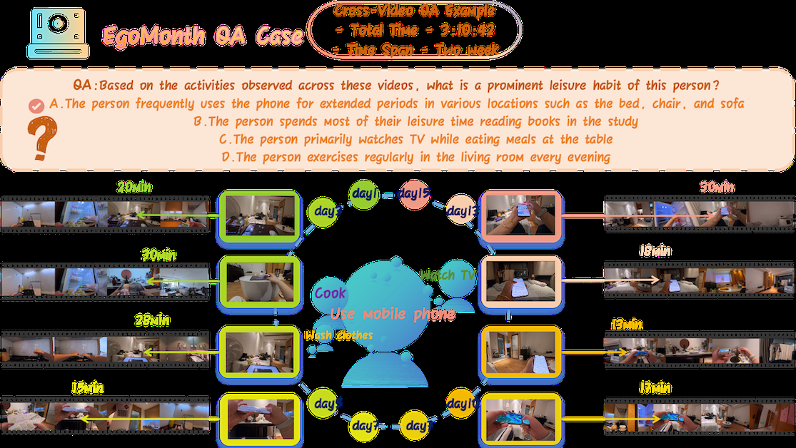
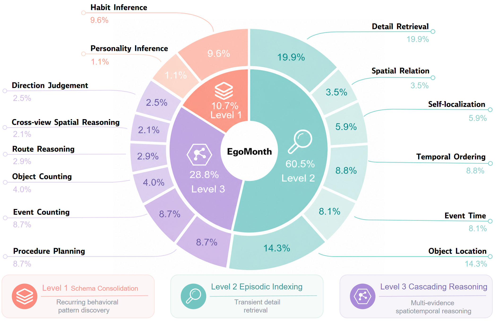
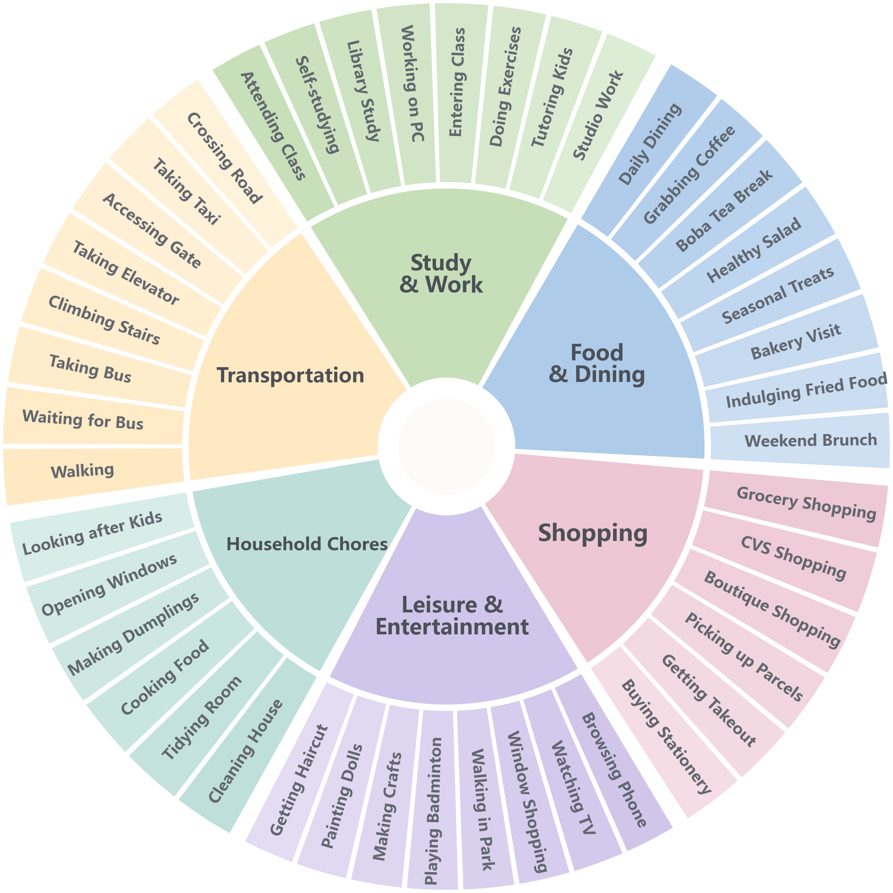

Project Page
EgoMonth
A Month-Level Egocentric Video Benchmark for Long-Term Spatiotemporal Memory
EgoMonth evaluates whether multimodal large language models can retain, retrieve, and reason over real daily-life experience across days and weeks, instead of treating long videos as isolated clips.

Benchmark
Month-level first-person video understanding
Existing long-video benchmarks mostly use web videos, movies, or isolated sessions. EgoMonth focuses on longitudinal first-person recordings where recurring spaces, habits, sparse events, and cross-day dependencies matter.
Each question is a four-choice QA item grounded in real video evidence. Some questions are answered from a single recording, while others require integrating evidence across multiple videos from different days.


Task Taxonomy
Three cognitive levels, fourteen task types
EgoMonth organizes evaluation into a hierarchy that increases memory pressure from recurring schema discovery to sparse episode retrieval and multi-evidence reasoning.
Level 1: Schema Consolidation
Habit inference and personality inference from repeated behavioral patterns over weeks.
Level 2: Episodic Indexing
Detail retrieval, spatial relation, self-localization, temporal ordering, event time, and object location.
Level 3: Cascading Reasoning
Procedure planning, event counting, object counting, route reasoning, cross-view spatial reasoning, and direction judgement.

Main Results
Current MLLMs remain far below human long-term memory
Gemini 2.5 Pro macro-average accuracy
Qwen2.5-VL-32B macro-average accuracy
Mean macro-average accuracy from three trained annotators
| Model | Frames | Parameters | Avg. | Acc. |
|---|---|---|---|---|
| Chat-UniVi-V1.5 | 256 | 7B | 39.5 | 39.9 |
| LLaVA-NeXT-Video | 64 | 7B | 40.6 | 41.7 |
| MiniCPM-V 4.5 | 256 | 8B | 56.0 | 60.6 |
| Qwen2-VL | 256 | 7B | 54.5 | 57.0 |
| Qwen2.5-VL | 256 | 32B | 58.0 | 60.8 |
| Qwen3-VL | 256 | 8B | 51.4 | 53.7 |
| Qwen3-VL-30B-A3B | 256 | 30B | 53.0 | 56.7 |
| ShareGPT4Video | 64 | 8B | 37.1 | 36.9 |
| ST-LLM | 256 | - | 38.8 | 40.8 |
| VideoLLaMA3 | 512 | 7B | 50.3 | 53.1 |
| VITA-1.5 | 16 | 7B | 51.3 | 53.6 |
| Gemini 2.5 Pro | 1 fps | - | 71.8 | 72.6 |
| Human | - | - | 94.2 | 95.1 |

Daily-Life Coverage
Diverse activities in persistent environments
EgoMonth covers study and work, transportation, food and dining, shopping, leisure and entertainment, and household chores. The longitudinal setting makes visually similar scenes recur across days, which stresses temporal indexing and spatial grounding.
Evaluation Scripts
Unified multiple-choice protocol
The repository includes model-specific evaluation scripts for Qwen2-VL, Qwen2.5-VL, Qwen3-VL, Qwen3-VL-30B-A3B, MiniCPM-V, LLaVA-NeXT-Video, Chat-UniVi, ST-LLM, VideoLLaMA3, VITA-1.5, and Gemini 2.5 Pro. Each script builds a video-grounded prompt and extracts a single answer letter from A, B, C, or D for direct comparison with the ground-truth option.
# Edit DATA_PATH, CONFIG["model_path"], and CONFIG["video_root"] first.
python scripts/qwen2vl.py
# Multi-subset Qwen2.5-VL-32B example:
# edit DATASET_LIST, CONFIG["model_path"], and CONFIG["video_root"].
python scripts/qwen2.5vl_32b.pyCitation
BibTeX
@misc{egomonth2026,
title = {EgoMonth: A Month-Level Egocentric Video Benchmark for Long-Term Spatiotemporal Memory},
author = {EgoMonth Team},
year = {2026}
}